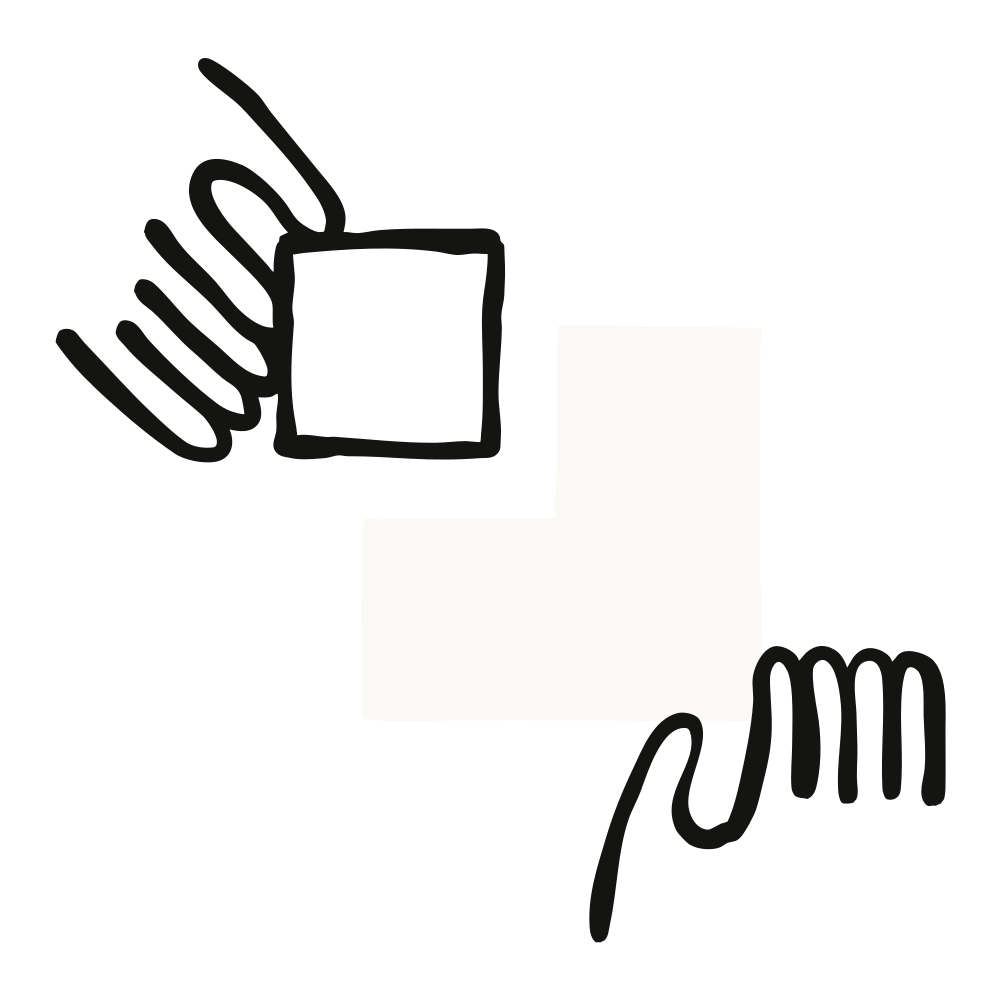
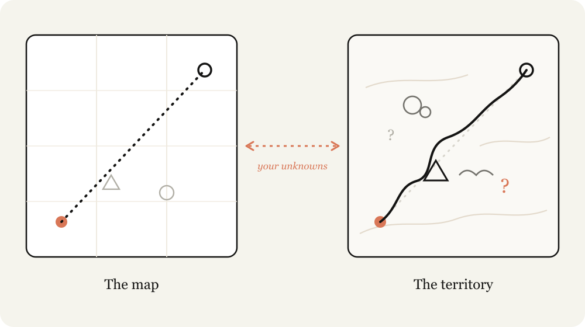
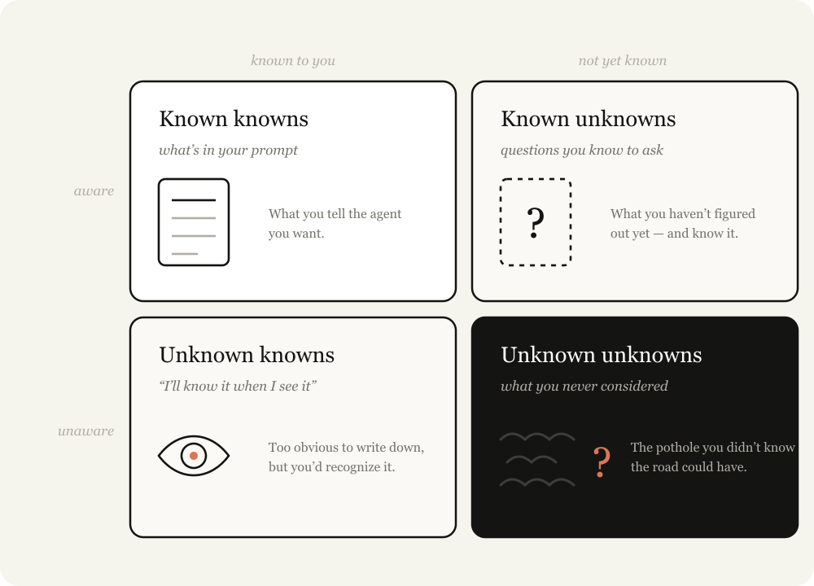
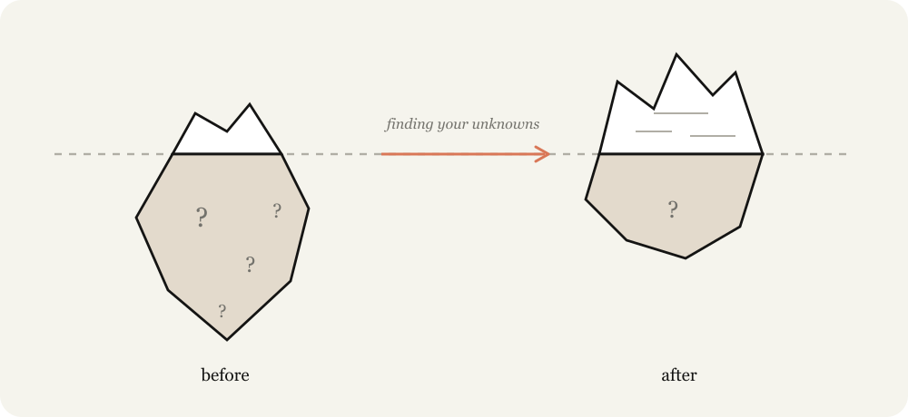

Claude Code로 작업하다 보면, 나는 종종 지도(map)와 영토(territory)의 차이를 떠올리게 된다.
지도, 즉 해야 할 작업을 표현한 것은 내가 쓰는 프롬프트이자 스킬이며 컨텍스트다. 그것이 내가 Claude에게 건네는 것이다. 영토는 작업이 실제로 일어나야 하는 곳, 곧 코드베이스이자 현실 세계이며, 그 실제 제약 조건들이다.

지도와 영토의 차이가 바로 내가 모르는 것(unknowns)이라고 부르는 것이다. Claude가 '모르는 것'에 부딪히면, Claude는 내가 무엇을 원하는지에 대한 자신의 최선의 추측에 기반해 결정을 내려야 한다. 수행해야 할 작업이 많아질수록, Claude가 마주칠 수 있는 '모르는 것'도 늘어난다.
Claude Fable은, 작업 품질이 그 '모르는 것'을 내가 얼마나 명확히 해줄 수 있느냐에 의해 좌우된다고 느끼게 된 최초의 모델이다.
중요한 점은, 미리 계획을 세우는 것만으로는 항상 충분하지 않다는 것이다. '모르는 것'은 구현 깊숙한 곳에서 발견될 수도 있고, 혹은 그 '모르는 것'이 사실은 문제를 아예 다른 방식으로 풀어야 한다는 사실을 가리킬 수도 있다.
나는 Fable과 함께 일하는 것이, 구현 전·중·후에 걸쳐 나의 '모르는 것'을 발견해 나가는 반복적인 과정이라는 것을 알게 됐다.
당신의 '모르는 것'이란 무엇인가? 나는 어떤 문제를 들고 Claude에게 올 때 그것을 네 가지 방식으로 쪼개는 편이다:
가장 뛰어난 에이전틱 코더(agentic coder)들은 '모르는 것'이 상대적으로 적다. Boris나 Jarred 같은 사람들이 프롬프트를 짜는 걸 보면, 그들이 자신이 원하는 바를 세부까지 알고 있다는 게 내게는 명백히 보인다. 그들은 코드베이스와 모델의 행동 양식 양쪽 모두와 깊이 동기화되어 있다.

하지만 그들 역시 '모르는 것'을 상정한다. 여러 면에서, 당신의 '모르는 것'을 줄이고 그에 대비하는 것이 바로 에이전틱 코딩의 기술(skill)이다. 다행히도 이것은 Claude와 함께 일하면서 향상시킬 수 있는 기술이다.

Claude에게 지시하는 것은 섬세한 균형 잡기다. 너무 구체적이면, 방향을 트는 편이 더 적절한 상황에서도 Claude는 당신의 지시를 그대로 따른다. 너무 모호하면, Claude는 업계 모범 사례에 기반해 선택과 가정을 하는 경우가 많은데, 그것이 당신의 작업에는 맞지 않을 수 있다.
당신이 자신의 '모르는 것'을 고려하지 않으면, 양쪽 모두에서 실패한다. 언제 그 길이 장애물로 가득할지 알지 못하고, 언제 길이 훤히 트여 있는지도 알지 못하지만, 그럼에도 당신은 Claude가 방향을 틀어주기를 원한다.
Claude는 당신이 '모르는 것'을 더 빨리 발견하도록 도울 수 있다. Claude는 당신의 코드베이스와 인터넷을 엄청나게 빠르게 뒤질 수 있고, 평균적인 주제에 대해 당신보다 훨씬 더 많이 알고 있다. 또한 실패로부터 더 빠르게 반복하며 개선해 나갈 수 있다.
이 과정에서 가장 중요한 부분은 당신의 출발점에 대한 컨텍스트를 Claude에게 주는 것이다. 예를 들어, 당신이 사고 과정의 어느 지점에 있는지 말해주고, 그 문제와 코드베이스에 대한 당신의 경험을 털어놓으며, Claude가 당신과 함께 생각을 나누는 파트너(thought partner)처럼 일하게 하라.
이 글에서 나는 이런 '모르는 것'을 밝혀내기 위해 내가 사용하는 몇 가지 패턴을 자세히 다룬다:
구현 전:
구현 중:
구현 후:
작업을 시작할 때 할 수 있는 가장 유용한 일 중 하나는 자신의 사각지대(blind spots)를 파악하는 것이다. 예를 들어 코드베이스의 새로운 영역에서 기능을 작성하거나, 디자인을 다듬는 것처럼 익숙하지 않은 작업에 Claude의 도움을 받는 경우, 당신에게는 모르는 것을 모르는 것(unknown unknowns)이 많을 가능성이 크다.
당신은 어떤 질문을 해야 할지, 무엇이 좋은 것인지, 과거에 어떤 작업이 이뤄졌는지, 어떤 함정을 피해야 하는지 모를 수 있다.
이런 상황에서는 Claude에게 당신의 '모르는 것을 모르는 것'을 찾아내고 그것을 설명해 달라고 요청할 수 있다. 나는 "블라인드 스팟 패스(blind spot pass)"와 "모르는 것을 모르는 것(unknown unknowns)"이라는 문구를 문자 그대로 쓰는 것을 좋아한다. 당신이 누구이며 무엇을 알고 있는지에 대한 컨텍스트를 주는 것이, Claude가 당신과 협업을 시작하는 가장 좋은 방법을 이해하는 데 대개 중요하다.
예시 프롬프트:
내가 아는 것을 모르는 것(unknown knowns)이 많은 영역에서 작업할 때, 즉 봐야만 정의할 수 있는 기준이 얽혀 있을 때, 나는 Claude에게 함께 브레인스토밍하고 프로토타입을 만들어 달라고 요청하는 것을 좋아한다.
'아는 것을 모르는 것'을 프로토타이핑 초기에 파악하고 말로 표현해 두는 것은 대단히 가치 있다. 구현 도중에 이를 알게 되면 (상대적으로) 비용이 클 수 있기 때문이다. 기능이나 스펙의 작은 변화가 코드에서는 극적으로 다른 구현으로 이어질 수 있고, 에이전트가 앞서 만든 변경을 되돌리기가 더 어려울 수 있다.
예를 들어, 백엔드 라우트를 연결하거나 프론트엔드에 추가 상태를 유지하지 않고도, 프레임에 버튼을 하나 추가하면 어떻게 보이는지만 확인하고 싶을 수 있다.
또 다른 예는 시각 디자인이다. 나에게 이것은 말로 설명하기는 어렵지만, 보면 내가 원하는 것을 아는 종류의 것이다. 이런 경우, 나는 하나의 아티팩트에 대해 여러 디자인 접근을 요청한다.
나는 또한 거의 모든 코딩 세션을 탐색 또는 브레인스토밍 단계로 시작한다. 이것은 프로젝트의 범위를 정의하려는 의도를 가지고 시작하는 데 도움이 된다. Claude는 내가 놓쳤을 법한 가치 높은 접근을 찾아내는 경우가 많은데, 반대로 나무를 보느라 숲을 놓치는 경우도 가끔 있다. 브레인스토밍은 내가 범위를 너무 좁게, 혹은 너무 넓게 잡는 것을 막아준다.
예시 프롬프트:
충분히 브레인스토밍을 한 뒤에도, 여전히 '모르는 것'이 남아 있을 가능성이 크다.
이 경우 나는 Claude에게 나의 '모르는 것'이나 모호한 지점에 대해 나를 인터뷰해 달라고 요청한다. Claude에게 인터뷰를 요청할 때는, 질문의 방향을 잡을 수 있도록 문제에 대한 컨텍스트를 주려고 해보라.
예시 프롬프트:
때로는 원하는 것을 세세하게 설명할 수 없을 때가 있다. 예를 들어 그것을 표현할 언어가 없거나, 너무 복잡해서 설명하는 데 꽤 오랜 시간이 걸릴 수 있다.
이 경우 최선의 접근은 레퍼런스다. 다이어그램, 문서, 그림도 포함할 수 있지만, 절대적으로 가장 좋은 레퍼런스는 소스 코드다.
어떤 방식으로 무언가를 구현한 라이브러리가 있거나, 정말 마음에 드는 디자인 컴포넌트가 있다면, 그냥 Fable에게 그 폴더를 가리키며 무엇을 봐야 하는지 알려주면 된다. 다른 언어로 되어 있어도 상관없다. 이것은 예컨대 스크린샷에 비해, 마크업과 구조에 관한 훨씬 더 풍부한 세부 정보를 Claude에게 제공한다.
예시 프롬프트:
구현할 준비가 됐다고 생각되면, 나는 검토할 수 있도록 Claude에게 구현 계획을 정리해 달라고 요청하는 편이다. 그 계획은 데이터 모델, 타입 인터페이스, UX 흐름처럼 가장 바뀔 가능성이 큰 부분에 초점을 맞춘다. 이렇게 하면 Claude가 내가 실제로 수정해야 할 수 있는 것들을 수면 위로 끌어올릴 수 있다.
예시 프롬프트:
계획에 만족하면, 나는 새 세션을 만들고 모든 아티팩트를 프롬프트에 넘긴다. 이렇게 하면 Claude에게 새로운 컨텍스트 윈도우를 주면서도, 계획 단계에서 취합한 모든 정보를 함께 넘길 수 있다. 예를 들어 스펙 파일과 프로토타입을 넘겨주며 에이전트에게 그것을 구현하라고 요청할 수 있다.
하지만 사실은, 아무리 많이 계획을 세워도 '모르는 것을 모르는 것'은 항상 어딘가에 도사리고 있다. 에이전트는 작업 도중에 코드에서 발견한 엣지 케이스 때문에 다른 방향을 취해야 한다는 걸 알게 될 수도 있다.
나는 Claude Code에게 임시 implementation-notes.md(또는 .html) 파일을 유지하며, 자신이 내린 결정들을 기록하게 한다. 그래서 우리가 다음 시도에서 배울 수 있도록 한다.
예시 프롬프트:
무언가를 출시할 때 가장 중요한 부분 중 하나는 공감(buy-in)과 승인을 얻는 것이다. 최종 문서에 피치(pitch)와 설명(explainer) 아티팩트를 만들어 두면 다음에 도움이 된다:
예시 프롬프트:
긴 작업 세션이 끝나고 나면, Claude가 내가 생각했던 것보다 훨씬 더 많은 것을 해냈을 수 있다. 코드 diff를 읽는 것만으로는 무슨 일이 일어났는지 얕게밖에 이해할 수 없다. 그 동작의 상당 부분은 기존 코드 경로에 의존하기 때문이다.
충분한 컨텍스트를 준 뒤 Claude에게 그 변경에 대해 나를 퀴즈로 시험해 달라고 요청하면, 무슨 일이 일어났는지 이해하는 데 도움이 된다. 나는 그 퀴즈를 완벽하게 통과한 뒤에야 머지(merge)한다.
예시 프롬프트:
Fable 출시 영상은 처음부터 끝까지 Claude Code로 편집했다. 이것은 나에게 새로운 영역이었고, 나는 결코 전문가가 아니다.
그래서 나는 내가 아는 것에서 출발했다. 나는 Claude가 코드를 사용해 영상을 편집하고 그것을 전사(transcribe)할 수 있다는 것을 알았지만, 그것이 충분히 정확한지는 확신하지 못했다. 그래서 나는 Claude에게 Whisper 같은 전사가 어떻게 동작하는지, 그리고 ffmpeg를 사용해 '음…' 같은 군말이나 긴 멈춤을 정확하게 잘라낼 수 있는지 설명해 달라고 요청했다.
나는 Claude가 내가 말하는 단어에 맞춰 타이밍을 잡은 UI를 만들어 주기를 원했지만, 그게 가능한지 확신하지 못했다. 그래서 나는 Claude에게 Remotion과 전사를 사용해 프로토타입 영상을 만들어서, 실제로 되는지 확인해 달라고 요청했다.
마지막으로, 영상 자체가 다소 칙칙해(muted) 보였다. 나는 그것이 컬러 그레이딩의 결과라는 것은 알았지만, 컬러 그레이딩이 무엇인지 사실 제대로 알지 못했다. 나의 첫 시도는 Claude에게 몇 가지 변형을 만들게 해서 고르는 것이었지만, 컬러 그레이딩에 관한 한 무엇이 "좋은" 것인지 내가 모른다는 것을 깨달았다. 그래서 대신, 나는 Claude에게 컬러 그레이딩에 대해 가르쳐 달라고 요청해 나의 '모르는 것'을 발견했다.
모델이 좋아질수록, 올바른 접근으로 더 많은 것을 이룰 수 있다. 긴 호흡의(long-horizon) 작업이 잘못된 결과로 돌아온다면, 그것은 십중팔구 당신이 '모르는 것'을 정의하는 데 더 많은 시간을 쓰거나, 당신과 Claude가 그것들을 헤쳐 나가며 적응할 수 있게 하는 구현 계획을 세워야 한다는 뜻이다.
모든 설명 자료, 브레인스토밍, 인터뷰, 프로토타입, 레퍼런스는 — 고치는 데 비용이 커지기 전에 — 당신이 몰랐던 것을 알아내는 저렴한 방법이다.
그러니 다음 프로젝트는 Claude에게 당신의 '모르는 것'을 찾도록 도와달라고 요청하며 시작하라.
이 글은 Anthropic 기술 스태프(member of technical staff) Thariq Shihipar가 작성했습니다.